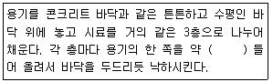
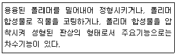
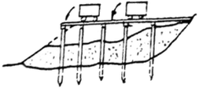
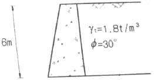
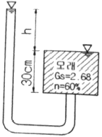
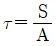
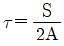
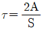
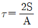

건설재료시험산업기사 (2019-04-27 기출문제)
1과목: 콘크리트공학
1. 콘크리트의 수밀성에 관한 설명으로 옳은 것은?
- 가능한 물-시멘트비를 크게 하면 수밀성을 높일 수 있다.
- 습윤양생을 하면 수밀성이 좋아진다.
- 수밀성이란 콘크리트가 경화한 후에 유수 중의 모래나 교통에 의한 마모, 충격 캐비테이션(cavitation) 등으로 콘크리트 표면이 침범당하는 것을 말한다.
- 일반적으로 감수제나 AE제를 사용하면 수밀성이 현저히 나빠진다.
(정답률: 56%)

2. PS콘크리트에 사용되는 강재에 요구되는 성질이 아닌 것은?
- 인장강도가 높아야 한다.
- 릴랙세이션이 커야 한다.
- 응력부식에 대한 저항성이 커야 한다.
- 직선성이 좋아야 한다.
(정답률: 64%)
3. 콘크리트 시방배합 결과, 굵은 골재량이 1000kg/m3, 잔골재량이 700kg/m3이었다. 이 배합에서 골재입도에 대한 보정을 실시하였더니 굵은 골재량이 1100kg/m3으로 증가하였다. 보정된 잔골재량은?
- 600kg/m3
- 640kg/m3
- 660kg/m3
- 700kg/m3
(정답률: 46%)
4. 팽창콘크리트의 팽창률에 대한 설명으로 틀린 것은?
- 콘크리트의 팽창률은 일반적으로 재령 28일에 대한 시험치를 기준으로 한다.
- 화학적 프리스트레스용 콘크리트의 팽창률은 (200~700)×10-6을 표준으로 한다.
- 공장제품에 사용하는 화학적 프리스트레스용 콘크리트의 팽창률은 (200~1000)×10-6을 표준으로 한다.
- 수축보상용 콘크리트의 팽창률은 (150~250)×10-6을 표준으로 한다.
(정답률: 63%)
5. 골재의 단위부피가 780L인 콘크리트에서 잔골재율이 39%이고, 잔골재의 밀도가 2.62g/cm3이면, 단위잔골재량은?
- 545kg
- 597kg
- 745kg
- 797kg
(정답률: 63%)
6. 경량골재 콘크리트의 시공에 대한 설명으로 틀린 것은?
- 경량골재 콘크리트의 운반은 하차 쉽고 재료분리가 적은 운반차를 사용하여야 한다.
- 경량골재 콘크리트는 일반 콘크리트에 비해 진동기를 찔러 넣는 간격을 크게하거나 진동 시간을 약간 짧게 하여 재료분리를 방지하여야 한다.
- 경량골재 콘크리트를 타설할 때 모르타르가 침하하고, 굵은 골재가 위로 떠오르는 재료 분리현상이 적게 일어나도록 하여야 한다.
- 거푸집에 접하지 않는 면의 마무리는 마무리 작업 후 콘크리트가 굳기 시작할 때까지의 사이에 일어나는 균열은 다짐 또는 재마무리에 의해서 제거하여야 한다.
(정답률: 53%)
7. 콘크리트의 탄성계수에 관한 설명으로 틀린 것은?
- 물-시멘트비가 작을수록 탄성계수는 커진다.
- 시멘트의 수화반응이 진행되면 콘크리트의 탄성계수는 커진다.
- 일반적으로 콘크리트의 압축강도 및 밀도가 클수록 탄성계수는 커진다.
- 압축강도가 같으면 보통콘크리트와 경량골재콘크리트의 탄성계수는 같다.
(정답률: 61%)
8. 콘크리트의 재령에 따른 압축강도 특성에 관한 설명으로 틀린 것은?
- 포졸란 재료를 사용한 콘크리트의 압축강도는 장기재령에서 강도가 증진된다.
- 증기양생을 실시할 경우 조기에 높은 강도증진 효과를 얻을 수 있다.
- 염화칼슘을 혼화재료로 적당량 사용할 경우 단기재령에서 강도는 저하되지만 장기재령에서 강도가 증진된다.
- 재령에 따른 압축강도 증가는 초기재령에서 강도증가율이 크며 시간이 경과할수록 작아진다.
(정답률: 55%)
9. 일반 콘크리트의 비비기에서 가경식 믹서를 사용할 때 비비기 시간의 표준은?
- 1분 이상
- 1분 30초 이상
- 2분 이상
- 2분 30초 이상
(정답률: 73%)
10. 프리스트레스트 콘크리트에서 프리스트레싱할 때 콘크리트 압축강도의 기준으로 옳은 것은? (단, 프리텐션방식의 경우이며, 실험이나 기존의 적용실적 등을 통해 안정성이 증명된 경우를 제외한다.)
- 25MPa 이상
- 30MPa 이상
- 35MPa 이상
- 40MPa 이상
(정답률: 53%)
11. 평탄한 운반로를 만들어 콘크리트의 재료분리를 방지할 수 있는 경우에는 운반거리가 최대 얼마 이하까지 손수레를 사용할 수 있는가?
- 100m
- 150m
- 200m
- 400m
(정답률: 69%)
12. 일반 수중콘크리트에 대한 설명으로 틀린 것은?
- 물-경합재비는 50% 이하이어야 한다.
- 타설할 때 완전히 물막이를 할 수 없는 경우 유속은 50mm/s 이하로 하여야 한다.
- 단위 시멘트량은 370kg/m3 이상이어야 한다.
- 대규모 공사의 경우 밑열림 상자나 밑열림 포대를 사용하여 시공하는 것을 원칙으로 한다.
(정답률: 73%)
13. 콘크리트의 배합강도를 결정할 때 필요한 압축강도의 표준편차는 몇 회 이상의 시험실적으로부터 결정하는 것을 원칙으로 하는가?
- 30회
- 50회
- 100회
- 120회
(정답률: 75%)
14. 콘크리트의 비파괴시험방법에 속하지 않는 것은?
- 반발경도법
- 초음파속도법
- 구관입시험법
- 충격공진법
(정답률: 48%)
15. 관리도에 대한 설명으로 틀린 것은?
- 제품 품질의 변동은 우연한 원인에 의한 변동과 이상 원인에 의한 변동이 있다.
- 관리도는 계량 값 관리도와 계수 값 관리도로 구분된다.
- 관리도에서 연속 6점 이상의 점이 순차적으로 상승 또는 하강할 때는 공정에 이상이 있다고 보고, 그 원인을 조사한다.
- 관리도를 사용하여도 우연한 원인에 의한 변동과 이상 원인에 의한 변동을 구분할 수는 없다.
(정답률: 64%)
16. 콘크리트를 제작할 때 혼화재의 1회 계량분에 대한 계량오차로서 옳은 것은?
- ±1%
- ±2%
- ±3%
- ±4%
(정답률: 62%)
17. 한중콘크리트로 시공할 경우 가장 주의깊게 고려해야 하는 사항은?
- 시공의 용이
- 화학적 저항성 증대
- 초기동해의 방지
- 수화열 저감
(정답률: 73%)
18. 고로 슬래그 시멘트를 사용한 콘크리트의 습윤 양생 기간의 표준으로 옳은 것은?
- 7일
- 6일
- 5일
- 3일
(정답률: 59%)
19. 해양 콘크리트의 염해에 대한 내구성 설명으로 틀린 것은?
- 염화물의 작용을 받을 경우 반복 응력을 받은 강재의 피로 강도가 현저하게 저하되는 경우가 있으며, 이를 부식피로라고 부른다.
- 고로슬래그 미분말이나 플라이애시를 적당량 시멘트와 치환함으로서 해수의 화학작용에 대한 내구성이 큰 콘크리트를 만들 수 있다.
- 해안선으로부터 250m 이내의 육상지역은 염해에 대한 대책이 필요하다.
- 염해에 의한 손상이 가장 큰 부분은 항상 해수와 접하는 해중부이다.
(정답률: 45%)
20. 콘크리트의 반죽질기를 측정하는 시험이 아닌 것은?
- 비비 시험
- 리몰딩 시험
- 블리딩 시험
- 슬럼프 시험
(정답률: 68%)
2과목: 건설재료 및 시험
21. 골재의 단위 용적 질량 시험에서 시료를 용기에 채우는 방법 중 충격에 의한 경우를 설명한 아래의 표에서 ()안에 알맞은 수치는?

- 10mm
- 50mm
- 80mm
- 100mm
(정답률: 52%)
22. 콘크리트용 혼화재료의 주요 사용목적으로 틀린 것은?
- 굳지 않은 콘크리트의 성형성 및 워커빌리티 개선
- 경화한 콘크리트의 강도특성 개선 및 내구성의 증진
- 시멘트 경화체의 수밀성 향상 및 강재부식방지
- 콘크리트의 잠재수경성 및 알칼리 골재 반응의 향상
(정답률: 50%)
23. 시멘트의 응결(setting)에 관한 설명 중 옳지 않은 것은?
- C3A가 응결은 지연된다.
- 습도가 낮을수록 응결은 빨라진다.
- 온도가 높을수록 응결은 빨라진다.
- 일반적으로 풍화된 시멘트의 응결은 지연된다.
(정답률: 57%)
24. 지름이 30cm, 길이가 3m인 재료에 축방향으로 인장을 가했을 때 변형을 측정한 결과 지름이 0.2mm 작아지고 길이가 8mm 늘어났다면 이 재료의 푸아송 수(Poisson's number)는 얼마인가?
- 0.2
- 0.25
- 4
- 5
(정답률: 45%)
25. 양질의 포졸란을 사용한 콘크리트의 특성에 대한 설명으로 옳지 않은 것은?
- 블리딩 및 재료분리가 적다.
- 수밀성 및 화학적 저항성이 크다.
- 조기강도가 크다.
- 발열량이 적다.
(정답률: 39%)
26. 골재에서 일반적으로 밀도가 클 때의 특징으로 가장 옳지 않은 것은?
- 공극률이 작다.
- 내구성이 크다.
- 조직이 치밀하다.
- 강도가 작다.
(정답률: 62%)
27. 시멘트의 분말도가 높을 때의 성질에 대한 설명 중 틀린 것은?
- 응결이 빨라진다.
- 초기강도가 크다.
- 수축 및 발열량이 작아진다.
- 시멘트가 풍화되기 쉽다.
(정답률: 51%)
28. 다음의 석재 중 압축강도가 가장 작은 것은?
- 화강암
- 현무암
- 응회암
- 안산암
(정답률: 58%)
29. 시멘트가 풍화하였을 때 일어나는 성질의 변화에 관한 설명으로 틀린 것은?
- 비중이 증가한다.
- 강열감량이 증가한다.
- 초기 강도가 저하한다.
- 일반적으로 응결시간은 늦는 경향이 있다.
(정답률: 52%)
30. 어떤 목재에 대하여 경도 시험(KS F 2212)한 결과 흔적이 깊이 0.32mm 찌른 하중이 21N이었다. 이 목재의 경도(N/mm2)는 얼마인가?
- 6.6
- 3.3
- 2.1
- 0.7
(정답률: 26%)
31. 습윤 상태에서의 모래가 600g이고, 표면건조 포화상태에서 590g이다. 절대 건조상태에서 580g일 때, 이 모래의 표면수율은 얼마인가?
- 1.5%
- 1.7%
- 1.9%
- 2.0%
(정답률: 54%)
32. 골재의 기상 작용에 대한 내구성을 판별하는 시험은?
- 골재 안정성 시험
- 골재 형상 시험
- 단위용적 질량 시험
- 골재 유해물 함량 시험
(정답률: 53%)
33. 다음 암석 중 변성암에 속하지 않는 것은?
- 천매암
- 대리석
- 편마암
- 현무암
(정답률: 53%)
34. 스트레이트 아스팔트와 블론 아스팔트에 대한 비교 설명으로 옳지 않은 것은?
- 스트레이트 아스팔트는 신장성, 방수성이 풍부하다.
- 스트레이트 아스팔트는 연화점이 낮고, 감온비가 작다.
- 블론 아스팔트는 융점이 높다.
- 블론 아스팔트는 탄성이 풍부하다.
(정답률: 52%)
35. 아래의 표에서 설명하는 토목섬유는?

- 지오텍스타일
- 지오멤브레인
- 지오컴포지트
- 지오그리드
(정답률: 54%)
36. 혼화재료는 소요의 성능을 얻기 위한 사용량의 다소에 의해 혼화제와 혼화재로 대별된다. 그 사용량의 기준이 되는 재료는?
- 물
- 시멘트
- 모래
- 자갈
(정답률: 70%)
37. 가열 아스팔트 혼합물은 포설 후 즉시 롤러에 의해 소정의 다짐도가 얻어지도록 충분히 다진다. 이 때 현장다짐밀도는 기준밀도의 몇 %이상인가? (단, 도로포장의 아스팔트 콘크리트 기충 시공인 경우이다.)
- 92% 이상
- 94% 이상
- 96% 이상
- 98% 이상
(정답률: 45%)
38. 아스팔트는 주로 반고체 및 반액상의 상태이다. 이런 아스팔트의 늘어나는 성질을 조사하기 위하여 실시하는 시험을 무엇이라 하는가?
- 침입도 시험
- 연화점 시험
- 점도 시험
- 신도 시험
(정답률: 58%)
39. 다음 중 폭발력이 가장 강하고 수중에서도 폭발할 수 있는 다이너마이트는?
- 교질 다이너마이트
- 규조토 다이너마이트
- 분말상 다이너마이트
- 스트레이트 다이너마이트
(정답률: 72%)
40. 다음 중 강재의 인장시험에서 알아내기 어려운 것은?
- 인장강도
- 판단연신율
- 항복강도
- 인성한도
(정답률: 53%)
3과목: 건설시공학
41. RERT기법에 의한 공정 관리 방법에서 낙관적 시간이 6일, 정상 시간이 10일, 비관적 시간이 8일인 경우에 공정상의 기대시간은?
- 8일
- 9일
- 12일
- 13일
(정답률: 61%)
42. 모양은 원형, 나팔형으로 자유낙하부, 곡관부, 연직갱부, 원형터널 등으로 구성되어 있으며, 유입여수로 터널 내에 부압이 생기므로 설계 관리상 부의하지 않으면 안되는 여수로는?
- 슈트식 여수로
- 사이펀 여수로
- 측수로 여수로
- 글로리 홀 여수로
(정답률: 47%)
43. 고무혼입 아스팔트 포장의 특징으로 거리가 먼 것은?
- 신도가 증가된다.
- 감온성이 감소한다.
- 마모에 대한 저상성이 작다.
- 저온에서 취성이 개선된다.
(정답률: 48%)
44. 8톤 덤프트럭으로 단위중량이 1.6t/m3인 흙을 운반할 때 시간당 작업량(m3/h)은? (단, L=1.25, Cm=30분, E=0.9)
- 9
- 11.25
- 13.25
- 15.30
(정답률: 23%)
45. FCM(Free Cantilever Method)공법의 구조형식에 따른 분류에서 연속보형식의 특징으로 옳지 않은 것은?
- 상하부가 일체리므로 교좌장치가 필요 없다.
- 주행성이 양호하다.
- 장기 처짐의 우려가 크지 않다.
- 교각과 상부 거더가 분리되어 있고, 중앙부위는 강결되어 있다.
(정답률: 53%)
46. 옹벽의 안정조건과 가장 거리가 먼 것은?
- 활동에 대한 안정
- 수압에 대한 안정
- 전도에 대한 안정
- 지반 지지력에 대한 안정
(정답률: 59%)
47. 다음 중 지반에 대한 시험 및 조사 방법과 그 결과의 내용으로 연결이 틀린 것은?
- 표준관입시험-N치
- 일축압축시험-침하량
- 평판재하시험-지반의 지지력
- 오거 보링-시료채취
(정답률: 45%)
48. 흙의 성토작업에서 아래 그림의 쌓기 방법은?

- 수평층 쌓기
- 유용토 쌓기
- 전방층 쌓기
- 비계층 쌓기
(정답률: 57%)
49. 운동장 또는 광장과 같은 넓은 지역에서 물이 고이지 않도록 하기 위하여 주로 사용되는 배수 방법은?
- 개수로 배수
- 지표 배수
- 맹암거 배수
- 암거 배수
(정답률: 49%)
50. 현수교(suspension bridge)의 가설 순서로 옳은 것은?
- main cable 가설→hanger rope 설치→주탑 세우기→보강 girder 설치
- hanger rope 설치→보강 girder 설치→main cable 가설→주탑 세우기
- 주탑 세우기→main cable 가설→hanger rope 설치→보강 girdr 설치
- 보강 girder 설치→hanger rope 설치→주탑세우기→main cable 가설
(정답률: 58%)
51. 말뚝 박기에 대한 일반적인 설명으로 옳은 것은?
- 말뚝기초는 주변 쪽에서 중심 쪽으로 박아 나간다.
- 해안선 같은 곳에서는 바다 쪽에서 육지쪽으로 박아 나간다.
- 기존 건물 가까이에 받을 때는 건물 가까운 쪽에서부터 박는다.
- 말뚝 박기를 표준적으로 1회 타격 관입량이 30mm 이내일 때 중지한다.
(정답률: 55%)
52. 숏크리트의 리바운스(Rebound)양 감소 방법으로 옳지 않은 것은?
- 호스의 압력을 일정하게 유지한다.
- 벽면과 45°로 분사시킨다.
- 13mm 이하인 세골재를 사용한다.
- 시멘트양을 증가시키고 접착제를 사용한다.
(정답률: 58%)
53. 18000m3의 자갈을 3m3의 덤프트럭으로 운반할 때 1일 운반가능 횟수가 10회이다. 6일간 전량을 운반하려면 1일 몇 대의 트럭이 소요되는가?
- 100대
- 150대
- 200대
- 250대
(정답률: 70%)
54. 지하 연속벽공법의 특징에 대한 설명으로 틀린 것은?
- 시공 시 소음, 진동이 작다.
- 강널말뚝에 비해 벽체의 강성이 크다.
- 차수효과가 크다.
- 일반적인 토류벽 공법에 비해 공사비가 저렴하다.
(정답률: 65%)
55. 시멘트 콘크리트 포장의 미끄럼 저항성을 크게 하기 위하여 실시하는 표면 마무리는?
- 초벌 마무리
- 거친면 마무리
- 평탄 마무리
- 간이 마무리
(정답률: 72%)
56. 성토재료의 다지기와 최적 함수비의 관계에 대한 설명으로 옳은 것은?
- 성토재료가 최적 함수비에 가까울 때 전압하중을 크게 하여 다지기 두께를 두껍게 하는 것이 좋다.
- 성토재료가 최적 함수비보다 습한 경우 전압하중을 증가하여 빨리 전압하면 소요의 다짐효과를 얻을 수 있다.
- 성토재료의 함수비가 최적 함수비보다 작을 때 살수를 함으로써 다짐의 효과를 개선할 수 있다.
- 최적 함수비 상태로 신중히 다지면 상토의 투수계수를 최대로 할 수 있다.
(정답률: 37%)
57. 버팀대식 흙막이 공법의 설명으로 틀린 것은?
- 응력상태를 확인하기 쉬워 흙막이 벽의 변형 및 파괴의 조기발견이 가능하다.
- 양질 지반에서 연약지반까지 적용범위가 넓다.
- 넓은 작업공간확보가 가능하여 대형장비 유입이 용이하다.
- 재질이 균일하며 시공이 간편하다.
(정답률: 50%)
58. 보통 흙을 불도저로 작업할 때 작업거리가 40m이다. 이 때 시간당 작업량은 얼마인가? (단, 전진속도 40m/min, 후진 속도 100m/min, 기어조작시간 0.3분, 베토판 용량 2.0m3, 작업효율 0.6, 토량 환산계수(f) 0.8이다.)
- 33.88m3
- 42.50m3
- 48.25m3
- 50.32m3
(정답률: 39%)
59. 터널에 있어서 인버트 아치(Invert Arch)를 할 필요가 있는 경우는?
- 경사가 클 때
- 용수가 많을 때
- 지질이 나쁠 때
- 단면을 크게 개축할 때
(정답률: 56%)
60. 다음 중 현장 콘크리트 말뚝이 아닌 것은?
- Franky 말뚝
- Benoto 말뚝
- Pedestal 말뚝
- P.C 말뚝
(정답률: 41%)
4과목: 토질 및 기초
61. 비중이 2.5인 흙에 있어서 간극비가 0.5이고 포화도가 50%이면 흙의 함수비는 얼마인가?
- 10%
- 25%
- 40%
- 62.5%
(정답률: 36%)
62. 그림에서 주동토압의 크기를 구한 값은? (단, 흙의 단위중량은 1.8t/m3이고 내부 마찰각은 30°이다.)

- 5.6t/m
- 10.8/m
- 15.8/m
- 23.6/m
(정답률: 51%)
63. 말뚝이 부마찰력에 관한 설명 중 옳지 않은 것은?
- 말뚝이 연약지반을 관통하여 견고한 지반에 박혔을 때 발생한다.
- 지반에 성토나 하중을 가할 때 발생한다.
- 말뚝의 타입 시 항상 발생하며 그 방향은 상향이다.
- 지하수위 저하로 발생한다.
(정답률: 57%)
64. 모래치환에 의한 흙의 밀도 시험 결과 파낸 구멍의 부피가 1980cm3이었고 이 구멍에서 파낸 흙 무게가 3420g이었다. 이 흙의 토질 시험 결과 함수비가 10%, 비중이 2.7, 최대 건조단위중량이 1.65g/cm3 이었을 때 이 현장의 다짐도는?
- 약 85%
- 약 87%
- 약 91%
- 약 95%
(정답률: 30%)
65. 점성토 지반의 개량공법으로 적합하지 않은 것은?
- 샌드 드레인 공법
- 바이브로 플로테이션 공법
- 치환 공법
- 프리로딩 공법
(정답률: 62%)
66. 예민비가 큰 점토가 다음 중 어떠한 것을 의미하는가?
- 점토를 교란시켰을 때 수축비가 적은 시료`2
- 점토를 교란시켰을 때 수축비가 큰 시료
- 점토를 교란시켰을 때 강도가 많이 감소하는 시료
- 점토를 교란시켰을 때 강도가 증가하는 시료
(정답률: 63%)
67. 표준관입시험에 관한 설명으로 옳지 않은 것은?
- 시험의 결과로 N치를 얻는다.
- (63.5±0.5)kg 해머를 (76±1)cm 낙하시켜 샘플러를 지반에 30cm 관입시킨다.
- 시허멸과로부터 흙의 내부마찰각 등의 공학적 성질을 주정할 수 있다.
- 이 시험은 사질토 보다 점성토에서 더 유리하게 이용된다.
(정답률: 54%)
68. 연약한 점토지반의 전단강도를 구하는 현장 시험 방법은?
- 평판재하 시험
- 현장 CBR 시험
- 직접전단 시험
- 현장 베인 시험
(정답률: 34%)
69. 흙 지반의 투수계수에 영향을 미치는 요소로 옳지 않은 것은?
- 물의 점성
- 유효 입경
- 간극비
- 흙의 비중
(정답률: 46%)
70. 그림에서 모래층에 분사현상이 발생되는 경우는 수두 h가 몇 cm 이상일 때 일어나는가? (단, Gs=2.68, n=60%이다.)

- 20.16cm
- 18.⑤cm
- 13.73cm
- 10.52cm
(정답률: 32%)
71. 어떤 점토의 압밀 시험에서 압밀계수(CV)가 2.0×10-3cm2/s라면 두께 2cm인 공시체가 압밀도 90%에 소요되는 시간은? (단, 양면 배수 조건이다.)
- 5.02분
- 70.7분
- 9.02분
- 14.07분
(정답률: 42%)
72. 느슨하고 포화된 사질토에 지진이나 폭파, 기타 진동으로 인한 충격을 받았을 때 전단강도가 급격히 감소하는 현상은?
- 액상화 현상
- 분사 현상
- 보일링 현상
- 다일러턴시 현상
(정답률: 45%)
73. 흙의 다짐에 관한 설명 중 옳지 않은 것은?
- 최적 함수비로 다질 때 건조단위중량은 최대가 된다.
- 세립토의 함유율이 증가할수록 최적 함수비는 증대된다.
- 다짐에너지가 클수록 최적 함수비는 커진다.
- 점성토는 조립토에 비하여 다짐곡선의 모양이 완만하다.
(정답률: 39%)
74. 어떤 흙의 전단시험 결과 c=1.8kg/cm2, ø=35°, 토립자에 작용하는 수직응력이 σ=3.6kg/cm2일 때 전단강도는?
- 3.86kg/cm2
- 4.32kg/cm2
- 4.89kg/cm2
- 6.33kg/cm2
(정답률: 49%)
75. 사면의 안정해석 방법에 관한 설명 중 옳지 않은 것은?
- 마찰원법은 균일한 토질지반에 적용된다.
- Fellenius 방법은 절편의 양측에 작용하는 힘의 합력은 0이라고 가정한다.
- Bishop방법은 흙의 장기안정 해석에 유효하게 쓰인다.
- Fellenius 방법은 간극수압을 고려한 ø=0 해석법이다.
(정답률: 39%)
76. 흙의 2면 전단시험에서 전단응력을 구하려면 다음 중 어느 식이 적용되어야 하는가? (단, τ=전단응력, A=단면적, S=전단력)




(정답률: 55%)
77. 흙의 동상을 방지하기 위한 대책으로 옳지 않은 것은?
- 배수구를 설치하여 지하수위를 저하시킨다.
- 지표의 흙을 화학약품으로 처리한다.
- 포장하부에 단열층을 시공한다.
- 모관수를 차단하기 위해 세립토층을 지하수면 위에 설치한다.
(정답률: 56%)
78. 어떤 유선망에서 상하류면의 수두 차가 4m, 등수두면의 수가 13개, 유로의 수가 7개일 때 단위 폭 1m당 1일 침투수량은 얼마인가? (단, 투수층의 투수계수 K=2.0×10-4cm/s)
- 9.62×10-1m3/day
- 8.0×10-1m3/day
- 3.72×10-1m3/day
- 1.83×10-1m3/day
(정답률: 35%)
79. 다음 중 얕은 기초는 어느 것인가?
- 말뚝기초
- 피어기초
- 확대기초
- 케이슨기초
(정답률: 48%)
80. 해머의 낙하고 2m, 해머의 중량 4t, 말뚝의 최종 침하량이 2cm일 Sander 공식을 이용하여 말뚝의 허용지지력을 구하면?
- 50t
- 80t
- 100t
- 160t
(정답률: 26%)